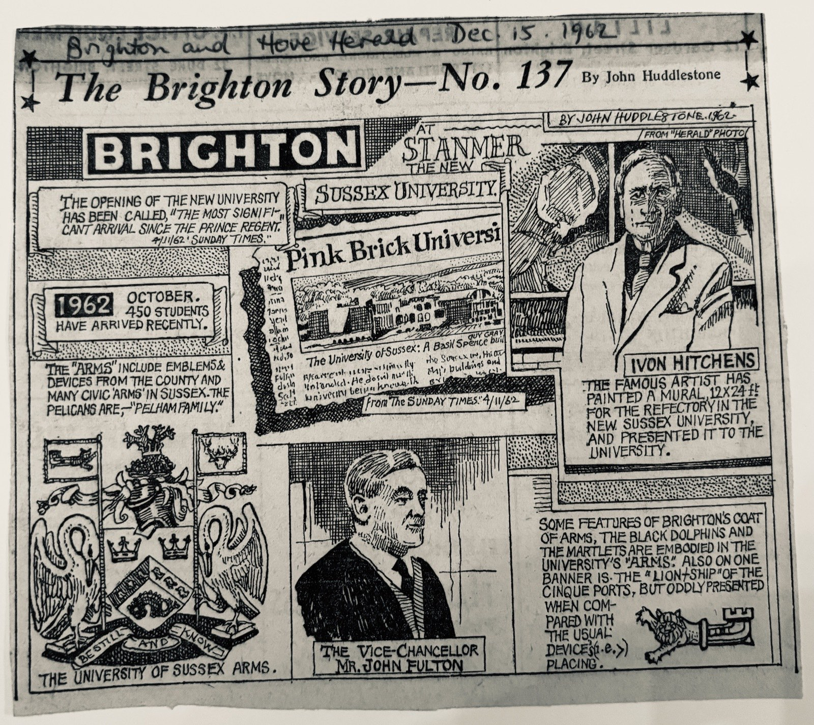
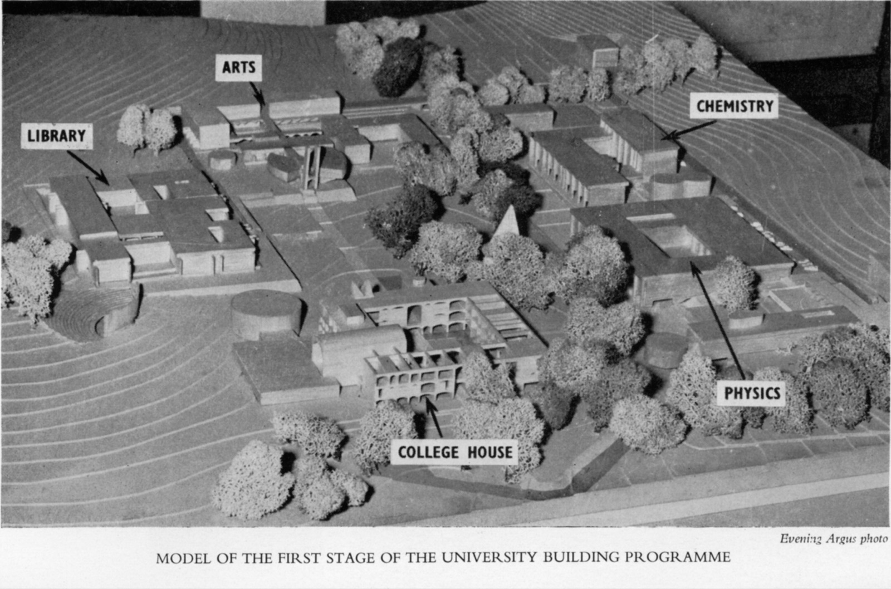

A university with a long period of gestation
The University of Sussex received its Royal Charter of Incorporation on 16 August 1961, and opened that October to fifty-two students in the arts, taught in two Victorian houses on Preston Road in Brighton with lectures held in a nearby church hall. It was the first of the wholly new universities of the decade. But the idea of a university for Sussex was, as its first Vice-Chancellor put it, a university created with ‘a long period of gestation’, and that gestation reached back half a century.
Fifty years in the making

A university college for Brighton was first proposed in November 1911, at a mayoral banquet at the Royal Pavilion, and pressed at a public meeting that December. A 1913 Royal Commission recommended that the Schools of the University of London should extend to the County of Sussex; the appeal for funds had barely begun when the First World War broke out, and the plan narrowly failed to come into being in 1914. Renewed attempts in 1925, and again after 1947, foundered on cost and on the unsettled question of what a new university was actually for.
The decisive turn came in the mid-1950s. A shift in government policy in December 1954 reopened the prospect of new institutions, and by June 1956 Brighton Council had agreed to make available 145 acres at Stanmer Park on a 999-year lease at a peppercorn rent of one pound a year. In February 1958 the Chancellor of the Exchequer announced a large programme of new university building, with funds allocated to the University College of Sussex; and on 20 May 1959 a company of that name was registered with the Board of Trade. In September 1959 John Fulton, Principal of the University College of Swansea, was appointed to lead it.
A crisis of the university

Sussex was conceived in the shadow of a widely felt anxiety about the university itself. Walter Moberly’s The Crisis in the University (1949), written by the outgoing Chairman of the University Grants Committee, diagnosed a loss of purpose in the existing universities, a drift sharpened by the moral collapse of the German universities under the Nazi regime and by fears that the post-war massification of higher education would hollow out the character of its graduates.
The question, then, was not only whether to build new universities but what kind of education they should give. Sussex was envisaged as an answer: not a civic university in the red-brick tradition, nor a collegiate one on the Oxbridge model, but a new university built on newly purchased land, free to rethink the curriculum from first principles.
The Robbins Report (1961–1963) opened a brief window in which new ideas could be tried and funded by the state and driven by student demand. Sussex, already chartered and teaching by the time Robbins reported, was ideally placed to take the fullest advantage of that opening before higher-education policy turned again in the later 1960s.
Balliol by the Sea

Fulton brought to Sussex an education shaped by the Scottish ‘democratic intellect’ of St Andrews and by the Oxford tutorial as he had known it at Balliol. He set out to make the tutorial, rather than the lecture or the seminar, the main means of undergraduate teaching: each student meeting a tutor weekly in groups of no more than five, learning by writing and by having that writing read closely. The aim was to counter what Fulton called the passive collection of unanalysed material.
Announcing the Charter in The Times in 1961, Fulton titled his article ‘Balliol by the Sea Faces Its Future’, and the nickname stuck, capturing both the ambition and the Oxford inheritance of the early university. Fulton chose the motto too, from Psalm 46: Be still and know, which he felt apt for an education set, for a few years, aside from the distractions of the everyday on the new green campus at Falmer.
Redrawing the map of learning
If Fulton supplied the Platonic and tutorial frame, it was Asa Briggs, appointed Dean of Social Studies and Professor of History in 1960, who gave the curriculum its defining shape. Briggs argued for redrawing the map of learning: against what he called departmentalism, and in favour of schools of study that would set a major discipline in dialogue with contextual subjects, so that fields informed one another rather than sitting in insular separation.
Students and teachers in science and the humanities, literature and social sciences all too often figure as inhabitants of separate continents. A few boats pass between them, fewer still on regular service. Asa Briggs, ‘Drawing a New Map of Learning’, 1964
Sussex opened with four schools, Social Studies, European Studies, English and American Studies, and Physical Sciences, with African and Asian Studies following in October 1964. The arts degree was modelled on Oxford’s Modern Greats; in the sciences, fields were combined, as in biophysics or chemical engineering. The principle throughout was that it mattered as much to decide what not to teach as what to teach.
Sources
This account draws on the documentary record assembled in Berry (2024), ‘A History of the Concept of the University of Sussex’, and on the contemporary statements of the founders, in particular Fulton’s ‘New Universities in Perspective’ (1964), Briggs’s ‘Drawing a New Map of Learning’ (1964), and Stone’s ‘Steps Leading to the Foundation of the University’ (1964). Full references are on the Sources page.